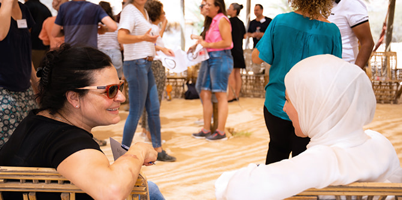
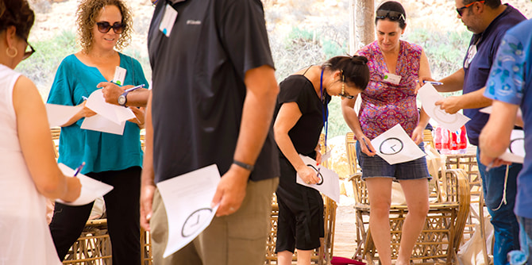
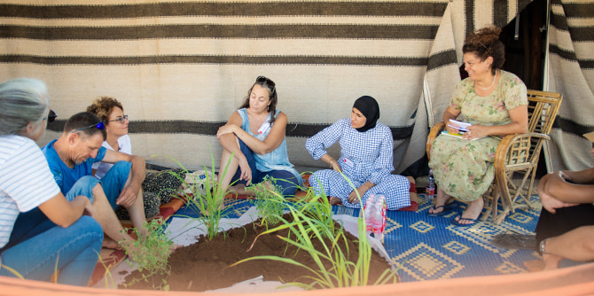
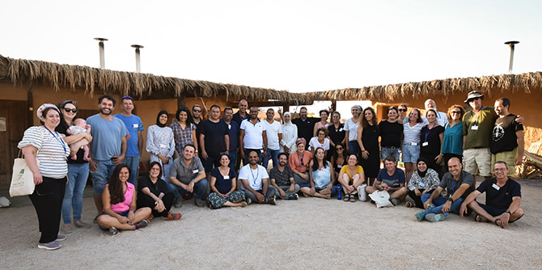

פותחים את הסמינר: בוגרת תוכנית כסייפה וערערה-בנגב פוגשת בוגרת תוכנית אילת (צילום: מור וולדמן)
כמדי קיץ, זוהי נקודת הזמן שבה נועדים בוגרות ובוגרים המגיעים מאזורי הנגב השונים והמרוחקים למקום אחד, ובו הם שותפים לתהליכי למידה, חשיבה, היכרות וגם הנאה.
זו שנתה הראשונה של יחידת בוגרות ובוגרי מנדל ושל תפקיד מובילת קהילת הבוגרים, ובשל כך הוחלט שהפעם יהיו הבוגרים שותפים ליציקת התוכן ולהובלת הפעילויות השונות.
בוגרות ובוגרים נרתמו למשימה מיד עם הפנייה אליהם, ויחד עם ענבל אשד, מובילת הקהילה, ועם פרופ' סמדר בן אשר וישראל שורק, חברי סגל המרכז, בנו את לוח הזמנים של הסמינר. התהליך שארך כמה חודשים הגיע לשיאו בריטריט עצמו, עת הגיעו משתתפי הסמינר אל החאן המדברי.

פעילות היכרות לפתיחת הסמינר (צילום: מור וולדמן)
מה מתחולל כשקבוצה של אנשים מופלאים מכל רחבי הנגב, בוגרי תוכניות המנהיגות של מנדל, נפגשים בחאן מדברי על גבול מצרים, ללא קליטת אינטרנט וללא מזגנים?
במהלך היומיים למדו הבוגרים על העשייה של חבריהם דרך סדנאות, מפגשים, משחק ותנועה: ערכנו דייטים והכרנו חברים חדשים בהובלת איציק רוס, בוגר מחזור ד' בתוכנית מנדל למנהיגות אזורית בבאר שבע; למדנו על קול, על בניית קהילה ועל פודקסטים עם בוזי רביב, בוגר מחזור ב' בתוכנית מנדל למנהיגות תרבות בנגב; חווינו פעילויות קרקס כאמנות וככלי טיפולי-חינוכי עם אדם דה לנגה, בוגר המחזור שאחריו; עפרה נתן, בוגרת תוכנית מנדל להכשרת מנהיגות עתידית בערד, הכירה לנו צמחי מרפא ודרכם את החיבור לאדם ולקהילה; ובן ארביב, בוגר תוכנית באר שבע אף הוא, הכיר לנו את צורות ההקשבה של שיטת ה-U.
סביב המדורה עם זריחת הירח המלא של ט״ו בתמוז עברנו סדנת אימפרוביזציה שפתחה לבבות, עם
קאיד אבו לטיף, בוגר מחזור א' בתוכנית מנדל למנהיגות מקומית ברהט. בבוקר מדברי שלו, סביב המדורה הרוחשת, ישבנו למדיטציה ולשיחה על תרבות, על הצלחה ועל כישלון עם
אריאל עמית, בוגר מחזור ג' בתוכנית מנדל למנהיגות תרבות בנגב.

סדנה: הצמח כראי האדם והקהילה (צילום: מור וולדמן)
את יומנו השני פתחנו בסדנה ליצירת קבוצות נושא לעשייה מכוונת לאתגרי הנגב, בהובלת אלכס ויינטראוב, בוגר באר שבע ב'. בריאות, תעסוקה, חינוך, תחבורה ציבורית לכפרים הלא-מוכרים ולאילת, נוכחות פוליטית לנגב בדרג מקבלי החלטות – כל אלה ועוד יעלו בהמשך, וחלקם אף יהפכו לקבוצות מעשה בהובלת הבוגרים.
סיימנו בריקוד, בשירה מקודשת בהובלת קובי רביבו, בוגר באר שבע ג', וסעד אבו גאנם, בוגר תרבות ב'. נחמיה פריאל, בוגר מחזור א' בתוכנית מנדל למנהיגות מקומית באילת, דיבר על מנהיגות בפרשת השבוע.
אז מה מתחולל כשחבורה מופלאה נפגשת בחאן מדברי? פתיחות, אהבה, רוך, שיחות נפש וקירוב לבבות בין אנשים שהנגב הוא ביתם ומרכז עשייתם, ופניהם אל עתיד טוב יותר.

משתתפי סמינר הלמידה של בוגרות ובוגרי מרכז מנדל למנהיגות בנגב (צילום: מור וולדמן)
{kind=link}
{kind=link}
{kind=link}
{kind=link}